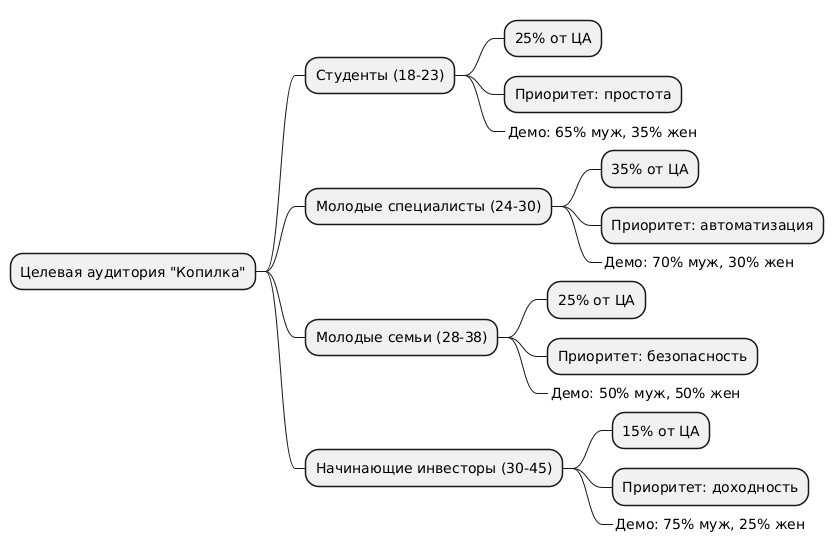
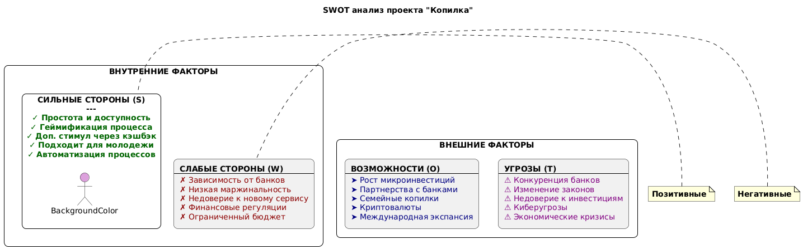

О проекте Копилка
Что такое Копилка?
Копилка — это инновационная автоматизированная система, которая помогает формировать привычку регулярных инвестиций даже при небольших доходах. Мы делаем накопления простыми, автоматическими и доступными для каждого.
Наша миссия
Мы стремимся повысить финансовую грамотность населения и сделать инвестиции доступными для всех, минимизируя усилия пользователя для сбережений. Наша цель — помочь людям начать инвестировать, даже если у них нет большого опыта или стартового капитала.
Целевая аудитория
Кто наши пользователи?
Основная аудитория: Физические лица в возрасте 18-45 лет, преимущественно молодежь и начинающие инвесторы.
Сегменты целевой аудитории:
🎓 Студенты
18-23 лет, ограниченный бюджет, стремление к финансовой независимости, активные пользователи смартфонов.
💼 Молодые специалисты
24-30 лет, первые стабильные доходы, интерес к инвестициям, недостаток времени для управления финансами.
👨👩👧 Молодые семьи
28-38 лет, планирование будущего, накопление на цели (жилье, образование детей), поиск дополнительных доходов.
🚀 Начинающие инвесторы
30-45 лет, стремление к росту капитала, изучение финансовых инструментов, готовность к умеренному риску.
Ключевые характеристики ЦА:
- Демография: 65% мужчин, 35% женщин, 70% проживают в городах-миллионниках
- Доход: Средний доход 25-80 тыс. рублей в месяц
- Технологичность: Активные пользователи смартфонов (4+ часа в день), предпочитают мобильные приложения
- Ценности: Стремление к финансовой грамотности, интерес к технологиям, ценят удобство и экономию времени
- Болевые точки: Нет стартового капитала, сложности с финансовой дисциплиной, страх ошибок в инвестициях
Диаграмма целевой аудитории

Структура и сегментация целевой аудитории сервиса "Копилка"
Ключевые инсайты:
Мобильный подход: 92% нашей ЦА предпочитают мобильные приложения веб-версиям
Геймификация: Молодежь (18-30 лет) в 3 раза охотнее пользуется сервисами с элементами игры
Микроинвестиции: 78% готовы начать с суммы менее 1000 рублей, если процесс автоматизирован
Безопасность: 65% называют безопасность главным критерием при выборе финансового сервиса
SWOT анализ проекта
💪 Сильные стороны
- Простота и доступность интерфейса
- Геймификация процесса накопления
- Дополнительный стимул через кэшбэк
- Подходит для молодежи и начинающих
- Автоматизация всех процессов
⚠️ Слабые стороны
- Зависимость от банковских интеграций
- Низкая маржинальность на начальном этапе
- Недоверие к новому финансовому сервису
- Сложности с финансовыми регуляциями
- Ограниченный бюджет на старте
🚀 Возможности
- Рост интереса к микросбережениям и микроинвестициям
- Партнерства с банками и маркетплейсами
- Расширение в семейные копилки и совместные цели
- Интеграция с криптовалютами и новыми активами
- Выход на международные рынки
🔥 Угрозы
- Конкуренция со стороны крупных банков (Тинькофф, Сбер)
- Изменения законодательства в финансовой сфере
- Недоверие населения к инвестициям после кризисов
- Киберугрозы и атаки на финансовые сервисы
- Экономические кризисы и снижение доходов населения
Визуализация SWOT анализа

Матрица SWOT анализа проекта "Копилка"
4P маркетинг-микс анализ
Product (Продукт)
Мобильное приложение + веб-платформа
- Автоматическое округление покупок в копилку
- Автоматическое инвестирование мелочи
- Интеграция с картами и банковскими счетами
- Кэшбэк-партнерская программа (часть кэшбэка → в копилку)
- Визуализация целей (прогресс-бары, графики)
- «Умные инвестиции» - готовые портфели для новичков
Price (Цена)
Freemium модель
- Базовый функционал — бесплатный
- Подписка (~199–499₽/мес) — расширенные возможности:
- Выбор инвестиционных стратегий
- Персональные финансовые советы
- Повышенный кэшбэк у партнеров
- Дополнительный доход через комиссии с партнеров (банки, магазины)
- Низкий порог входа для пользователей
Place (Место/Дистрибуция)
- Основной канал — мобильное приложение (iOS, Android)
- Дополнительно — веб-версия с расширенной аналитикой
- Интеграция с онлайн-магазинами и маркетплейсами
- Партнерские программы с банками
- Доступ через официальный сайт и магазины приложений
Promotion (Продвижение)
- Реклама в TikTok, Instagram, Telegram (подача как «лайфхак по накоплению денег без усилий»)
- Партнерство с банками, онлайн-магазинами, сервисами доставки
- Геймифицированные челленджи («отложи 50₽ в день — получи бонус»)
- Блог о финансовой грамотности (мены, короткие советы, сторис-формат)
- Реферальная система: «Пригласи друга — получите оба +200₽ в копилку»
- Контент-маркетинг через YouTube и финансовые блоги
Ключевые выводы по 4P анализу
Уникальное предложение
Комбинация автоматических накоплений, кэшбэка и инвестиций в одном продукте
Доступность
Бесплатный базовый функционал делает сервис доступным для широкой аудитории
Мобильность
Фокус на мобильных приложениях соответствует привычкам целевой аудитории
Виртуальное продвижение
Использование digital-каналов, соответствующих аудитории 18-45 лет
Ключевые возможности
🔄 Автоматическое округление
Система автоматически округляет ваши траты и разницу переводит в копилку. Потратили 147₽ — 3₽ уходят в накопления!
💰 Кэшбэк-программа
Получайте кэшбэк от партнерских магазинов, часть которого автоматически инвестируется в ваш портфель.
📈 Умные инвестиции
Автоматическое распределение средств в готовые инвестиционные портфели, адаптированные под ваш уровень риска.
🎯 Геймификация целей
Визуализация прогресса, достижения и челленджи делают процесс накопления увлекательным и мотивирующим.
🔒 Безопасность
Соответствие требованиям 152-ФЗ, SSL/TLS шифрование и двухфакторная аутентификация для защиты ваших данных.
📊 Аналитика и отчетность
Подробная аналитика расходов, доходов и инвестиционных результатов с понятными графиками и прогнозами.
План реализации проекта
Подготовительный этап
- Анализ рынка и конкурентов
- Проектирование UX/UI интерфейсов
- Подготовка бизнес-модели
- Формирование технического задания
Разработка прототипа
- Разработка рабочего прототипа системы
- Подключение платежных API
- Тестирование функции "Копилка"
- Интеграция с банковскими системами
Расширение функционала
- Добавление системы кэшбэка
- Внедрение первых инвестиционных инструментов
- Разработка геймифицированных элементов
- Интеграция с партнерскими программами
Завершающий этап
- Бета-тестирование системы
- Оптимизация пользовательского интерфейса
- Запуск рекламной кампании
- Подготовка к официальному релизу
Официальный запуск
- Официальный релиз платформы
- Масштабное продвижение на рынке
- Сбор обратной связи от первых пользователей
- Планирование дальнейшего развития
Бизнес-модель
Монетизация
Freemium модель: базовый функционал бесплатный, премиум-подписка (199-499₽/мес) открывает расширенные возможности:
- Выбор инвестиционных стратегий
- Персональные финансовые советы
- Повышенный кэшбэк у партнеров
- Расширенная аналитика
Целевая аудитория
Основные пользователи: физические лица 18-45 лет, преимущественно молодежь и начинающие инвесторы.
Ключевые характеристики:
- Активные пользователи смартфонов
- Интерес к финансовой грамотности
- Небольшие, но регулярные доходы
- Желание начать инвестировать без больших вложений
Конкурентные преимущества
- Простота и доступность интерфейса
- Комплексный подход: накопления + кэшбэк + инвестиции
- Сильная геймификация процесса
- Автоматизация всех процессов
- Фокус на микроинвестициях
Технологии и безопасность
Технический стек
- Веб-фреймворк: Django/Node.js
- Мобильные приложения: Kotlin/Swift
- Базы данных: реляционная СУБД
- Облачный хостинг с масштабированием
Безопасность
- Соответствие 152-ФЗ о защите персональных данных
- SSL/TLS шифрование всех соединений
- Двухфакторная аутентификация
- Регулярные аудиты безопасности
Интеграции
- Платежные системы и банки
- Биржевые сервисы и брокеры
- Партнерские магазины и маркетплейсы
- Системы аналитики (Google Analytics)
Начните инвестировать с нами!
Присоединяйтесь к сообществу финансово грамотных людей и начните свой путь к финансовой свободе уже сегодня.